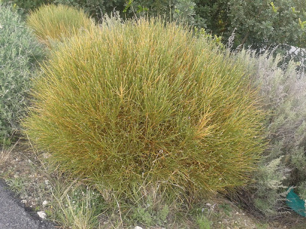

Ayuntamiento de Senés
JARDIN BOTANICO DE ESPECIES AUTOCTONAS DE SENES

Genista umbellata

La bolina (Genista umbellata) es un arbusto perenne característico de los ecosistemas áridos del sureste de la Península Ibérica. Presenta un porte denso y muy ramificado, con tallos rígidos y espinosos que le confieren un aspecto compacto y resistente.
Sus hojas son pequeñas o prácticamente inexistentes, adaptándose a la reducción de la pérdida de agua en ambientes secos. Durante la floración, se cubre de pequeñas flores amarillas agrupadas, que aportan un importante valor ecológico al atraer insectos polinizadores.
La bolina se distribuye en zonas áridas y semiáridas del sureste de la Península Ibérica, creciendo en suelos pobres, pedregosos y calizos. Es habitual en laderas soleadas, terrenos degradados y zonas de monte bajo.
En áreas como la Sierra de los Filabres, forma parte del matorral mediterráneo adaptado a condiciones extremas, contribuyendo a la estabilidad del suelo y a la biodiversidad del entorno.
Tradicionalmente, la bolina ha sido utilizada de forma limitada en la medicina popular, principalmente por sus posibles propiedades antiinflamatorias. Sin embargo, su principal valor reside en su papel ecológico.
Es una especie clave en la protección del suelo frente a la erosión y en la regeneración de terrenos degradados.
La bolina simboliza la resistencia y la supervivencia en condiciones extremas. Su capacidad para desarrollarse en suelos pobres y climas áridos la convierte en un ejemplo de adaptación al medio.
También representa la fortaleza del paisaje mediterráneo más seco y la capacidad de la naturaleza para persistir en entornos difíciles.
En Senés, la bolina la recolectaban los llamados leñeros de los hornos que recibían a cambio pan, otro uso era como escoba para barrer caminos. Nunca se habló que tuviera propiedades curativas.
También ha sido valorada como planta protectora del suelo, ayudando a evitar la erosión en terrenos expuestos.
La bolina florece principalmente durante la primavera, cubriéndose de pequeñas flores amarillas que destacan en el paisaje árido.
Esta floración es importante para los insectos polinizadores, especialmente en entornos donde la vegetación es escasa.
La ausencia o reducción de hojas en la bolina es una adaptación para minimizar la pérdida de agua, sustituyendo su función fotosintética por los tallos.
Es una planta muy resistente que puede prosperar en condiciones donde pocas especies sobreviven, siendo clave en la restauración de ecosistemas degradados.